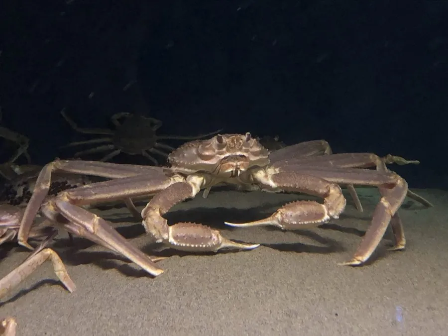

甲壳动物 · 动物界
雪蟹 Chionoecetes opilio

北太平洋和北大西洋冷水海域的重要经济蟹类，甲壳浅红、腿长，肉质鲜甜，是高端海产，渔业受配额管理。
- 分类
- 门节肢动物门纲软甲纲目十足目科突眼蟹科属雪蟹属
- 栖息环境
- 北太平洋和北大西洋冷水海域的泥沙底，随季节迁移
- 地理分布
- 北太平洋和北大西洋，包括日本海、白令海和加拿大东海岸
- 保护级别
- 暂无评估；渔业受配额管理
物种志
雪蟹头胸甲近圆形，甲面有颗粒，步足细长，体色浅红至橙红，螯足较小；雄蟹甲宽可达 15 cm 左右，雌蟹明显较小，成熟雄蟹的螯足和步足修长。
它生活在北太平洋和北大西洋的冷水海域，从浅海到数百米深，喜欢泥沙底，随水温和季节迁移。雪蟹杂食，捕食底栖动物、贝类、蠕虫和小鱼。它的生长缓慢，雌蟹产卵后抱卵约一年，幼体浮游发育。雪蟹是重要的经济蟹类，日本、俄罗斯、加拿大等地均有捕捞，渔业通过配额、最小可捕尺寸和禁捕抱卵蟹管理。近年来部分海域的种群数量变化与海水升温和捕捞压力有关。雪蟹的甲壳较薄，腿部肉质饱满，适合清蒸、水煮和涮火锅。
形态与习性
- 食性捕食底栖动物、贝类、蠕虫和小鱼
- 体型雄蟹甲宽约 15 cm，雌蟹明显较小
- 生长生长缓慢，雌蟹抱卵约一年
- 栖息冷水海域泥沙底，随水温季节迁移
- 经济高端海产，日本、加拿大等地重要渔业
- 管理配额、最小可捕尺寸和禁捕抱卵蟹
趣味知识
- 雪蟹的腿又长又细，肉质鲜甜，是高端海产。
- 它生长缓慢，雌蟹抱卵约一年，因此资源恢复较慢。
- 日本海一带的雪蟹在冬季上市，被称为松叶蟹。